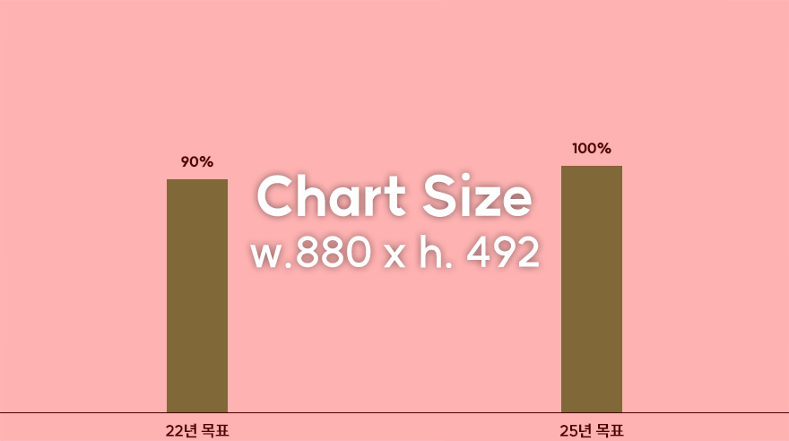

9. Minimizing Anti-corruption Risks
Zero tolerance of anti-corruption, 100% completion rate in anti-corruption training for all employees
SK innovation prevents potential anti-corruption risks and uncertainties through internal control and precautionary employee training. We will fulfill the qualification of the public and private procurement integrity.
Anti-corruption training completion rate

* From 2022 onwards, anti-corruption training performances will cover our employees in all sites, using the newly-devised education programs.
Strategy
Offering corporate-wide anti-corruption training and using multiple communication channels to promote ethical values
- Continuing to spread management's commitment to zero tolerance for corruption
- Regular/specialized training for employees on laws/policy/violation cases and enhanced channels for communication such as compliance pledges/internal reporting